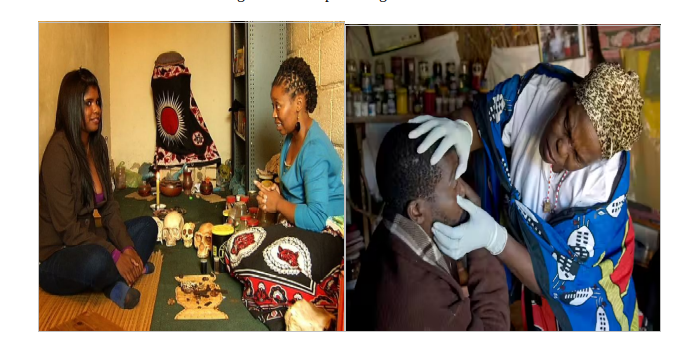

Medical pluralism refers to the coexistence of multiple medical systems to assist in health conditions simultaneously. The availability of different health systems enables people to choose which one they want to seek consultation from. The health sector patients decide to use is influenced by individuals’ personal beliefs, values, and explanatory models for treating illness. Kleinman (1980) developed a model demonstrating the intersection of these systems into three sectors: Popular, Professional, and Folk.
The popular sector is the largest health sector where healing begins within local communities. It includes home remedies, diet, and internet searches for medication. It is also known as self-treatment, where an individual self-prescribes medicine without consultation with a medical or traditional practitioner.
This sector encompasses recognized formal healthcare provided by qualified health practitioners in biomedicine, modern scientific medicine, or Western medicine. It is mostly supported by the government and regarded as the most superior or authoritative sector, focusing on fixing problems through a positivist paradigm that emphasizes evidence-based understanding.
The folk sector is an unprofessional sector that includes complementary and alternative medicine, such as homeopathy, herbalism, and traditional medicine. It is related to healing through restoration.
There are different forms of health systems from which people tend to seek help. I agree that the choice of health system depends on individual beliefs, values, and explanations of illness. I primarily use the popular sector, creating remedies for cough, headache, and wound healing, like cannabis leaves, aloe, and liquorice plant tea. This knowledge comes from social media, my grandparents, and a belief in traditional herbs, which are accessible and affordable in my community in the Eastern Cape.
After trying these remedies without improvement, I often seek professional assistance from medical doctors and traditional healers (sangoma). This collaboration aligns with the findings of Moshabela et al. (2017), who note that the gap between these sectors causes delays in resolving health issues. Recommendations for collaboration to accelerate drug discovery have either not been implemented or are progressing slowly. Tugendhaft (2010) identifies barriers to collaboration, including the stigma surrounding the superiority of the professional sector over others, influenced by the scientific evidence of biomedicine and the spirituality of the folk sector.
This relates to last week's course content on defining health, where the social domain plays a significant role in well-being. The professional sector is heavily influenced by Western culture, while the folk sector draws on cultural and spiritual beliefs through communication with ancestors. Differences in belief systems create gaps between these sectors, as illustrated by Campbell et al. (2010), who argue that varying explanatory models of illness hinder collaboration. For instance, traditional practitioners may interpret mental illness through a spiritual lens, while the professional sector relies on scientific interventions.